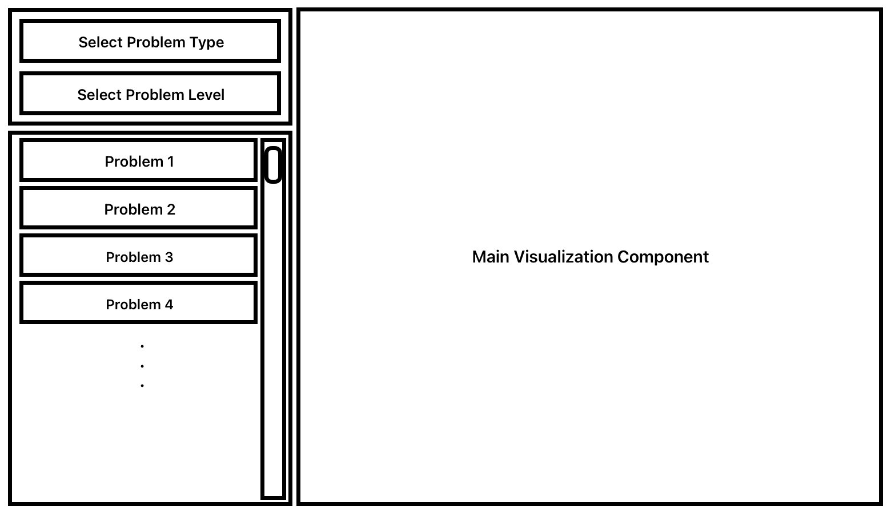
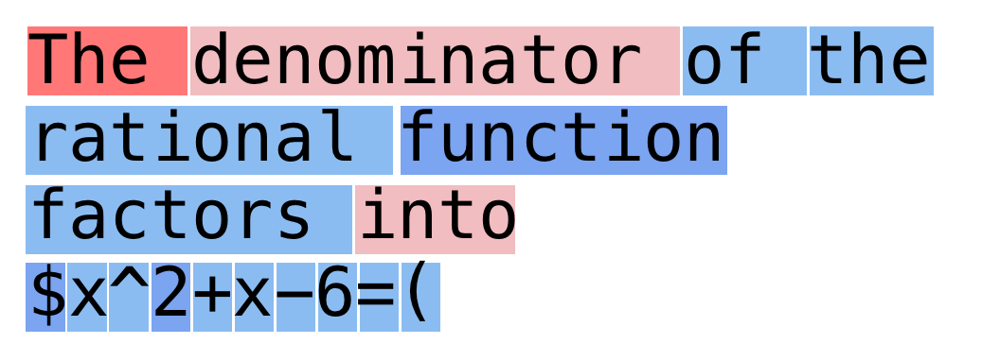
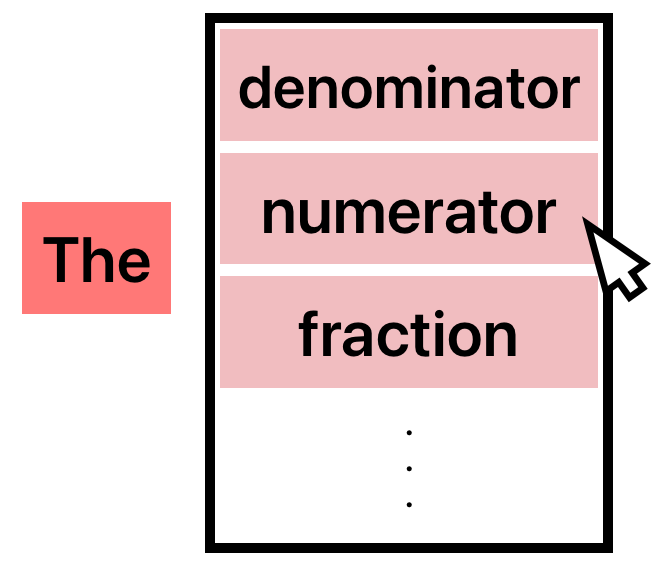
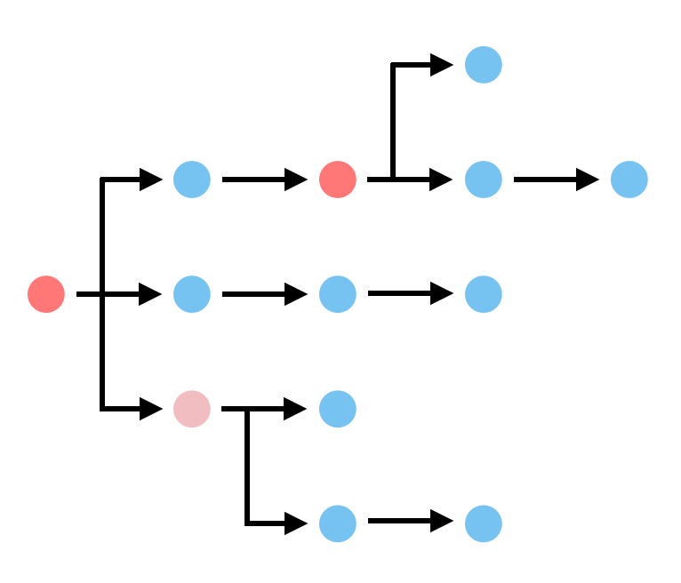
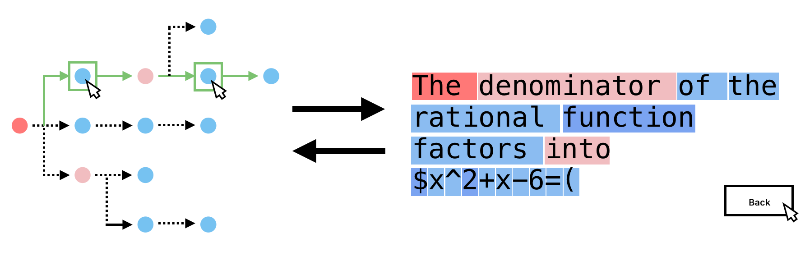

Large Language Models (LLMs) are machine learning models that have been specially trained to generate language. LLMs are often viewed as "stochastic parrots" that echoes back what it has learned from giant copora. While it is true that the core idea behind LLMs is based on statistics and probabilities, there may be more than what appears on the surface. Texts are generally considered as unstructured data. However, certain domains of texts, such as computer programs and mathematical reasoning, are written according to deterministic set of rules. With recent advancements in programming and mathematical reasoning, LLMs have demonstrated their impressive capacity to learn those rules from vast amounts of data. Active research is being conducted to understand how exactly these models "reason" (a charged word) through their generative endeavors.
Entropy, roughly, is a measure of surprise. Higher the entropy, greater the randomness. When a LLM predicts the next word in a sentence, it does so in stochastic fashion. That is, instead of returning a single word, the model returns a probabillity distribution over all of its vocabulary. Then, a decoding algorithm (e.g. top-k, top-p, beam-search) selects one token from that distribution. Since the model returns a probability distribution, we can measure the "unsureness" or the entropy of the model at token level. While beyond the scope of this project, training of LLMs involves reducing entropy (cross-entropy to be more precise), so that its predicted probability distributions mirror that of training data. This is why LLMs are often described as "stochastic parrots". At its core, the training objective of a LLM is to "parrot" the training data (a lot of details are glossed over here).
The objective of this project is two folds. The main objective of this project is to visualize internals of the model by using entropy as a proxy. Understanding the inner workings of LLMs are notoriously challenging given their scale and complexity. Entropy provides some insights into how the model "thinks", for it illustrates how confident or confused the model is at each generation step. By visualizing entropy, we hope to foster better understanding of language modeling for the viewers. Another, more abitious objective is to explore whether, through visualization, we could uncover underlying structures in model's generative process in specific domains. As mentioned previously, code and mathematical reasoning are governed by strict set of logic. It would be interesting to explore how the entropy of the model's generation is impacted by different domains. For instance, comparing entropy between texts from math and those from philosophy.
We are mainly using the Mathematics Aptitude Test of Heuristics (MATH) dataset, which consists of problems from mathematics competitions, including the AMC 10, AMC 12, AIME, and more. Each problem in MATH has a full step-by-step solution, which we can use to compute the features of the model.
Instead of using the original dataset version, we use DigitalLearningGmbH/MATH-lighteval. This version of the dataset contains appropriate builder configs.
We are also considering using datasets beyond math reasoning, such as coding and agentic tasks. For coding, we are looking at the OpenCodeReasoning dataset, which is the largest reasoning-based synthetic dataset to date, comprising 735,255 Python samples across 28,319 unique competitive programming questions. OpenCodeReasoning is designed for supervised fine-tuning (SFT).
Overall, we hope that the diverse usage of datasets, paired with our token entropy visualization approach, can provide an accurate visualization of the reasoning processes and patterns of a model.
Model Choice: We are using Qwen3, which is nearly the latest generation of large language models in the Qwen series, offering a comprehensive suite of dense and mixture-of-experts (MoE) models. Due to resource limitations, we are considering using a smaller model variant (e.g., the 0.6B model).
We are still choosing between the base model and the post-tuned model. The latter is fine-tuned, which may offer better alignment, but the base model provides raw, unaligned token distributions.
Prompt Processing: Given an LLM, we are interested in analyzing its generation patterns. In this section, we outline how we format and process our prompts.
We first wrap the input with a chat template, which structures the model to act as a helpful assistant tailored to answer questions. It typically looks like this:
<|im_start|>user\nSolve the following math problem step by step. ... Remember to put your answer on
its own line after "Answer:".<|im_end|>\n<|im_start|>assistant\n\n'
'<|im_start|>user\nSolve the following math problem step by step. Points $A,B,C,D,E$ and $F$ lie, in that order,
on $\\overline{AF}$, dividing it into five segments, each of length 1. Point $G$ is not on line $AF$. Point $H$
lies on $\\overline{GD}$, and point $J$ lies on $\\overline{GF}$. The line segments $\\overline{HC},
\\overline{JE},$ and $\\overline{AG}$ are parallel. Find $HC/JE$. Remember to put your answer on its own line
after "Answer:".<|im_end|>\n<|im_start|>assistant\n\n\n \n\nTo solve the problem, we need to determine
the ratio \\( \\frac{HC}{JE} \\) given that'
lm_head used to predict the next token, whereas the latter is assigned to every token. This means we are primarily focused on the next-token behavior of the model.
{"example": 0, "prefix_len": 0, "input_text": "<|im_start|>system\nYou are Qwen, created by Alibaba Cloud.
You are a helpful assistant.<|im_end|>\n<|im_start|>user\nSolve the following math problem step by step.
How many vertical asymptotes does the graph of $y=\\frac{2}{x^2+x-6}$ have? Remember to put your answer on
its own line after \"Answer:\".<|im_end|>\n<|im_start|>assistant\n", "prefix_text": "", "next_token_id": 785,
"next_token": "The", "next_token_prob": 0.00508663197979331, "top": [["To", 1249, 0.9553558230400085],
["Answer", 16141, 0.01801641657948494], ["The", 785, 0.00508663197979331], ["Step", 8304, 0.005080659408122301],
["First", 5338, 0.003323637181892991], ["###", 14374, 0.002597952727228403], ["**", 334, 0.002054785378277302],
["Let", 10061, 0.001930398866534233], ["1", 16, 0.0010608343873172998], ["We", 1654, 0.0009453252423554659]],
"tensor_file": "outputs/tensors/example_00000.pt", "tensor_row": 0}

Overall, we imagine that the visualization system will consist of three main components: 1) filter, 2) prompt viewer/selector, and 3) canvas. Users should be able to filter and sort prompts by problem types and/or problem levels, allowing them to easily navigate through different types of prompts. Through the prompt viewer/selector, users will select a prompt to see model's corresponding generation. The canvas is where the main visualization component will be. We hope that simplicity of our design will allow users to focus more on exploring model generation.
This is where most of our efforts will be focused on. The goal of our visualization will be to effectively communicate the entropy information of model's generated texts. Mainly, we will be working with two types of data in our visualization: text and floating pointer numbers. Each generation step will have associated probability distribution among n tokens, which will be used to calculate entropy at each generation step for some selected token. Then, we are tasked with encoding the autoregressive generation as well as entropy.

One popular way to visualize entropy of tokens is through encoding entropy using highlight color for corresponding tokens. Alternative way to encode entropy would be to utilize fontsize. The benefits of this idea lies in its simplicity. Viewers of this visualization is immediately drawn to the encoded entropy. The downside of this visualization is that it does not effectively encode the autoregressive nature of the generation. To an uneducated viewer, the visualization is just some text with colorful highlights.

To encode the autoregressive nature of the generation, we could simulate the task of next token prediction through an interactive component. The upside is that users will experience the autoregressive nature of the generation. The downside is that users may be too focus on the generation aspect, which is not central to our objective.

Yet another way to encode the autoregressive, stochastic nature is through direction and branching. Trees lend themselves to be a great visualization for both the autoregressive and stochastic characteristic of language generation. Similar to previous methods, color can be used to encode the entropy at each generation step. Unlike the previous approach, users are able to observe the generated content at a macro scale, which may uncover underlying structures of different articles. However, branching can quickly get out of hand, and the visualization may become too cluttered.

The final design seeks to be a culmination of all three ideas. The main piece of the visualization will be the tree but with an additional feature where users can select nodes at every "fork" in the path, allowing them to explore how different choices can lead to different answers. We have not finalize yet how exactly we would control the branching of the generation, but I imagine it would entail selecting forks at steps with entropy above some threshold. Each node will encode entropy with color. We have yet to decide whether to also put tokens on the nodes or render them separately once the user has selected a full path through the tree. The rendered text will be the visualization discussed in Idea 1.